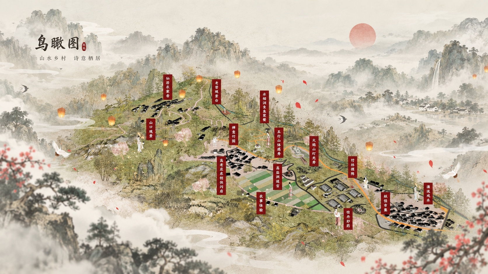
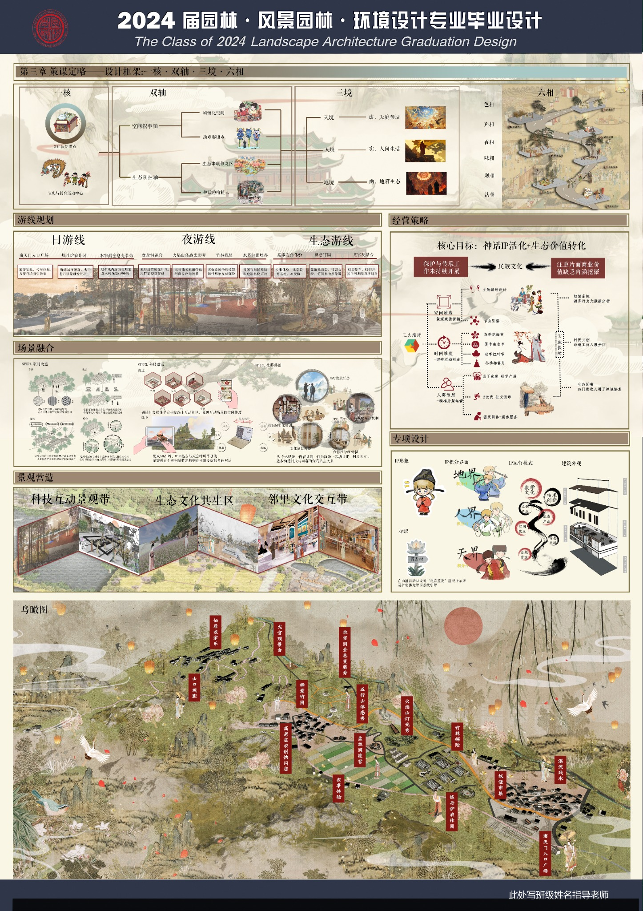
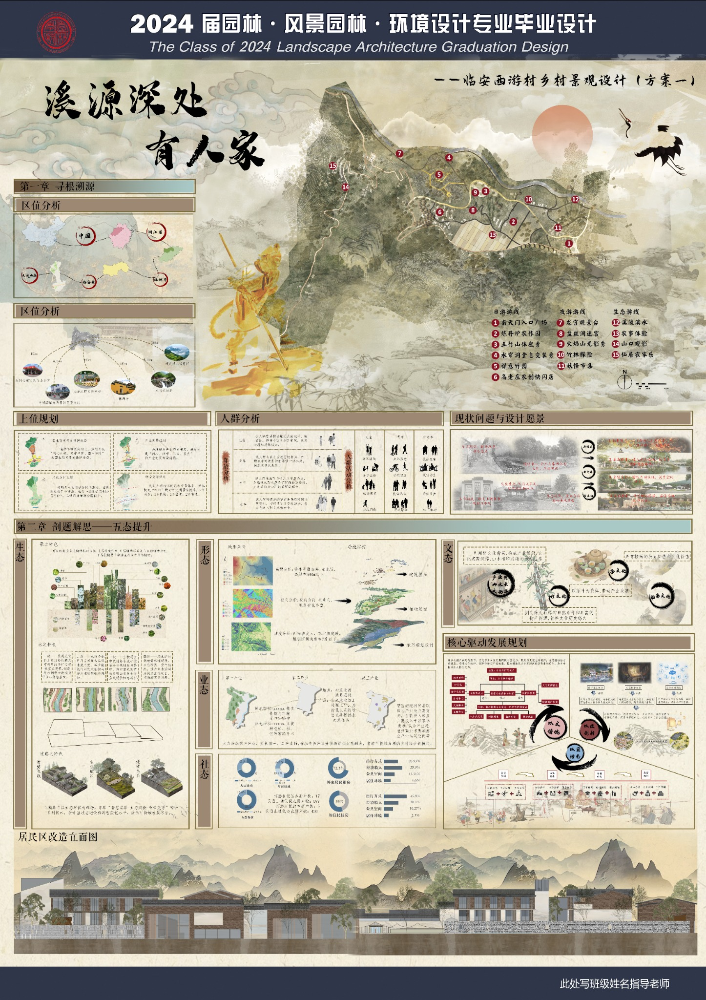

Landscape Architecture Graduation Project
有人家
Rural Design
A graduation design project based on Xiyou Village in Lin'an, exploring how rural landscape can connect ecological restoration, local culture, tourism experience, and everyday community life.

A rural revitalization proposal rooted in landscape, village memory, and cultural continuity.
This project focuses on Xiyou Village in Lin'an and examines how landscape design can respond to rural transformation. Instead of treating ecology, culture, and tourism as separate issues, the design brings them together through one integrated village experience.
The proposal highlights local natural resources, spatial character, and cultural identity, then translates them into a design strategy that supports scenic routes, activity scenes, and long-term village development.

Strategy framework, visitor routes, scene integration, and the overall village masterplan.

Site context, planning analysis, development framework, and architectural design expression.
Back to
Visual Practice →